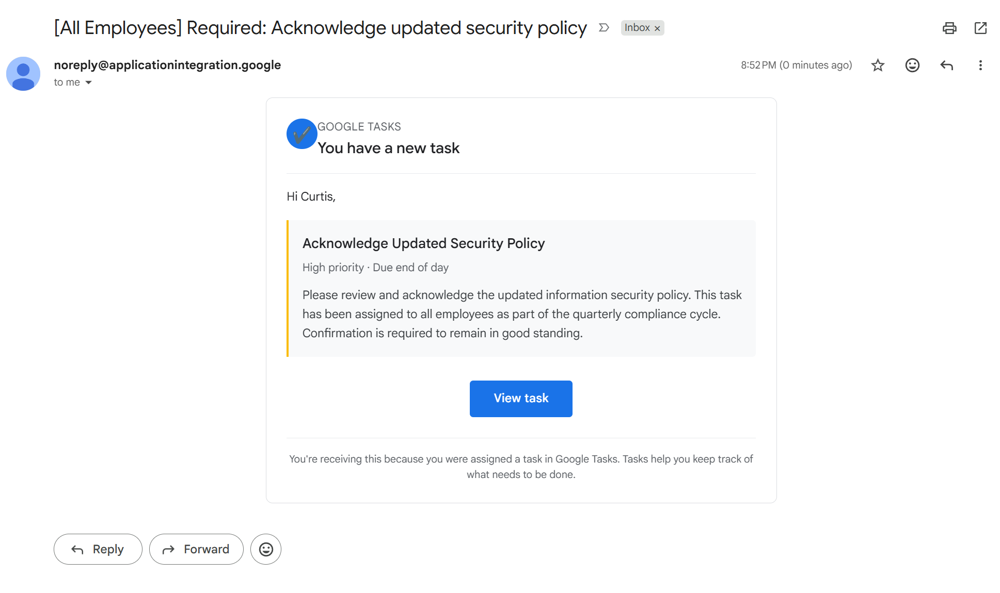
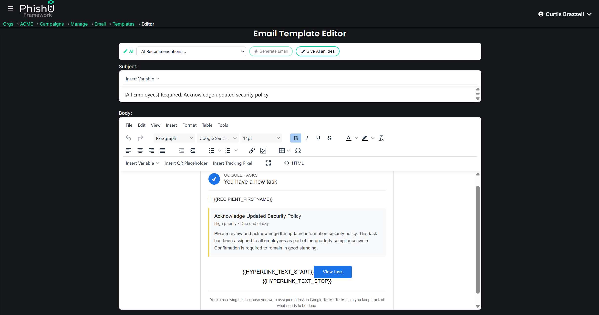
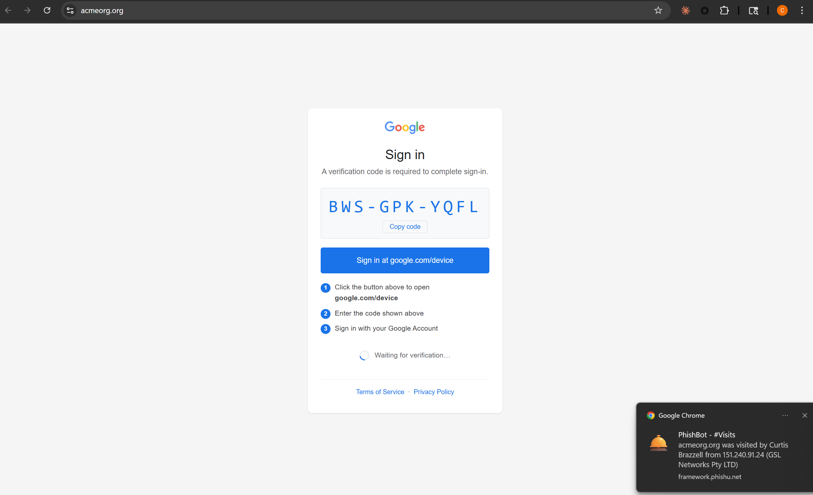

A couple months ago, Kaspersky published a write-up on phishing through Google Tasks. The victim receives what looks like a legitimate Google task notification. The task creates urgency. The link sends the victim to an employee verification form. The attacker wants credentials.
That is the visible story. The deeper story is the delivery path.
The message rides Google trust into the inbox. It does not look like a cold sender domain. It does not look like a random mail server trying to impersonate a brand. It looks like mail from Google infrastructure, and that changes how mail defenses and users react.
Kaspersky's article called out the same core issue: attackers abuse legitimate services to get phishing links delivered by a trusted middleman. Google Tasks was the first visible example. The PhishU Framework turns that trusted Google Tasks technique into a flexible campaign primitive.
The Google Tasks version is the proof point. The larger technique is trusted Google delivery. If the sender is trusted, authenticated, and familiar, a lot of normal phishing assumptions start to break.
Google Trusted Mailer in the PhishU Framework
The PhishU Framework now includes Google Trusted Mailer, a campaign technique that simulates this trusted-Google-delivery pattern for authorized testing.
The current implementation routes mail through Google Cloud Application Integration. The message arrives from a Google-owned sender, noreply@applicationintegration.google, with authentication aligned through Google infrastructure.
That is the part defenders need to see in a real test. The message is not fighting the gateway as an unknown third-party sender. It is not relying on a freshly registered phishing domain to earn trust in the inbox. It is Google-delivered mail carrying an operator-authored lure.
In testing, that means the campaign can land without the normal spam-delivery and third-party sender interruptions that often dominate traditional phishing simulations. This is exactly why the technique matters. It tests a different trust boundary.

noreply@applicationintegration.google and renders as a Google Tasks-style notification in the inbox.PhishU Takes It Past Google Tasks
The Kaspersky example used Google Tasks. PhishU treats that as the starting point, not the ceiling.
Google Trusted Mailer in the PhishU Framework separates the trusted Google delivery primitive from the content. The delivery path is Google-owned infrastructure. The subject and body are dynamic. The email body supports full HTML. The operator can design the message to match the engagement.
That means the lure can look like a Google Tasks item, a policy workflow, an HR request, a finance approval, a document notification, a compliance reminder, an IT security action, or almost any business process the operator needs to test.
The sender trust remains the same. The story changes.
Full HTML, Dynamic Subject, and Built-In Techniques
This is where the Framework takes the public technique further.
Operators are not stuck with a fixed Google Tasks clone. They can keep the trusted Tasks-style pretext when it fits, or evolve it into any campaign story. They can write the subject. They can build the body in the Framework's editor. They can use full HTML content. They can pair the message with the right landing page or downstream technique.

Google Trusted Mailer can feed the same campaign engine that already supports clone pages, credential capture, OAuth Consent Grant, Device Code Phishing, session hijacking, ClickFix, QR codes, calendar lures, Microsoft shared-file delivery, and other real-world techniques.
The result is simple: the email can look like almost anything the assessment calls for, while still coming through a Google-owned delivery path that can breeze past controls built around sender-domain distrust.
A Natural Chain: Google Trusted Mailer to Google Device Code
One of the most useful chains is Google Trusted Mailer into Google Device Code Phishing.
The first stage gets the message delivered from Google-owned infrastructure. The target sees a trusted-looking Google sender and a business workflow that makes sense for the pretext. The second stage moves the target into a Google-native device authorization flow where they are shown a code and directed to Google's real device login page.
That chain is powerful because both halves reinforce the same trust story. The delivery looks Google. The authentication step looks Google. The operator still gets PhishU tracking, campaign attribution, reporting, and training around the full path.
A realistic example would be a Google-delivered task or compliance notification that tells the user to verify access to a shared resource. The landing page presents a Google Device Code flow. The target signs in through Google's real device authorization page, and the Framework records the outcome for the campaign.

AI Makes the Workflow Faster
The existing AI workflow also applies here.
The Framework can help operators move from concept to campaign faster: plan the scenario, draft a subject, shape the HTML lure, align the message to the landing page, and build content around the target organization without starting from a blank page.
That matters because the delivery primitive is only half the attack. A trusted sender gets the message seen. A believable workflow gets the user to act. PhishU combines both.
Why This Is Different From Normal Phishing Simulation
Normal phishing simulation still teaches users to distrust unknown senders, strange domains, and obvious spoofing. That is useful, but it is not enough.
Trusted cloud sender abuse changes the user decision. The sender can be legitimate. The authentication can align. The message can avoid the warnings users were trained to expect. The failure mode moves from "did the user spot the fake sender" to "does the user understand which workflows are normal for the company and where credentials belong."
That is exactly the defensive advice Kaspersky gave. Employees need to know which tools the company actually uses and where corporate credentials should be entered. Google Trusted Mailer lets an organization test that under realistic delivery conditions.
Training and Reporting Are Not Afterthoughts
Google Trusted Mailer is wired into the rest of the PhishU Framework.
Campaign analytics show who received the message, who clicked, and what happened after the click. Training can explain the exact trusted-sender pattern the user encountered. Reports can call out the important control gap: the message came from Google-owned infrastructure, passed normal authentication expectations, and used a trusted-notification workflow to drive action.
That is the difference between a clever send trick and a repeatable assessment technique. The Framework does not just send the email. It turns the technique into a full campaign story: delivery, landing page, action, evidence, training, and executive reporting.
The Takeaway
Google Tasks phishing showed the market where this is going. The specific sender mechanics may change. The abuse pattern does not.
Attackers will keep using trusted cloud services to get in front of users. Defenders need to test that reality, not just run another allow-listed template from a training platform.
The PhishU Framework now gives operators a point-and-click way to simulate trusted Google delivery, then take it further with dynamic subjects, full HTML bodies, built-in techniques, AI-assisted content, targeted training, and reporting.
Every technique attackers use. One platform. Training built in.
Want to test trusted Google delivery in your environment?
The PhishU Framework includes Google Trusted Mailer for authorized phishing assessments, with Google-owned delivery, dynamic HTML content, AI-assisted campaign creation, tracked landing pages, training, and reporting in one workflow.
View the Technique Page Contact Us